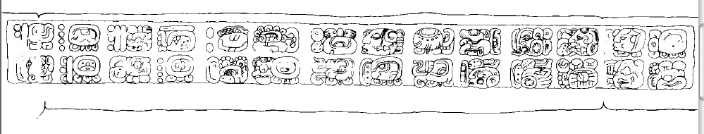
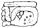

Dos Pilas Hieroglyphic Stairway 4: Step 2

Reading:
A1
Distance Number: [9] K'ins)
B1
Distance Number continued: 4 Winals
A2
u-ti-ya?
B2
Tzolk'in: 6 Ahaw
C1
Haab: 13 Mak
D1

5-tun
C2
i u-ti
"and then it happened"
D2
Tzolk'in: 4 Muluk
E1
Haab: 2 K'umk'u
Summary of date: 4.9 days after the 5-tun ending 6 Ahaw, 13 Mak (9.10.15.0.0), it was 4 Muluk 2 K'umk'u (9.10.15.4.9). BCK would be 1.2.11.7 days old